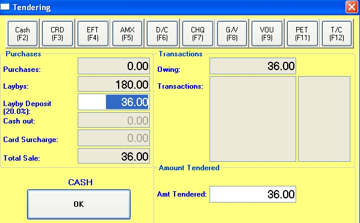

Laybys are handled in the POS in a similar way to standard cash sales. Note that laybys cannot be processed in the same transaction as a standard cash sale or refund.
Creating a layby
Select a customer in the Customer field in the usual way (i.e. enter the customer code, use back slash or other short cuts or use the F3 button).
Click on the Layby button (F5). The colour of the POS window will change to sky blue to remind you that this is a layby.
Scan the barcodes of the layby products as for a standard cash sale, changing the quantity, price and discount fields as required.
Click the Finished button (F12) when done.
The Tendering window will now open.

The Tender type will set the default for the POS
The Layby Deposit field and the Amount Tendered field will display the minimum deposit amount. This deposit is a percentage (set in the Financials tab of System Options) of the total layby amount. Over type this deposit amount if required.
The cursor will be in the Deposit field. To move to the Amount Tendered field, press the Tab or Enter key. For a cash deposit, overtype the amount tendered if required. Press the Enter key (or click the OK button) to conclude the layby.
The Tendering window will close, a layby docket will be printed, the POS window will clear and be reset for the next (standard) transaction, the cash drawer will open if needed and the Change window will display if there is any change.
Handy hint
If part of the way through a standard transaction, the customer decides to change a standard transaction to a layby, just click on the Layby (F5) button to switch it to a layby. If you have not yet entered a customer code, the Customer Search window will open where you can search for an existing customer code or create a new one.
Similarly if they change their mind and decide to pay the full price for the layby, click on the Cash Sale (F4) button to change the transaction back to a standard sale.